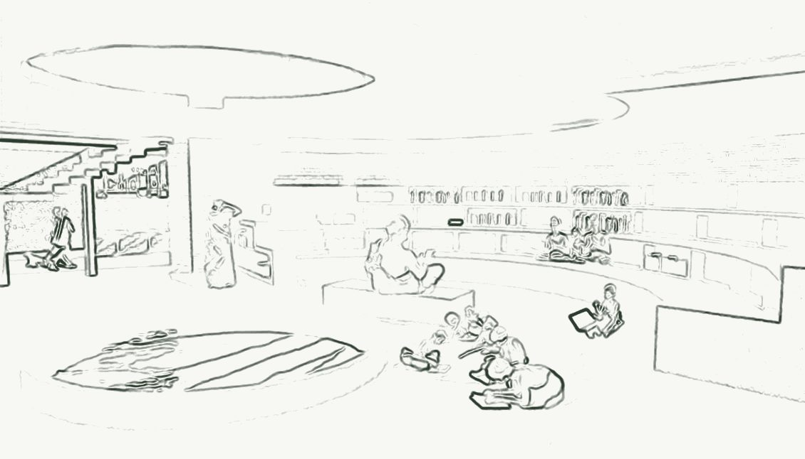

Time in the village came before any drawing.
Architecture · Tiny library
Enshrine.
A tiny library for Mattur, the Sanskrit village, built from local brick on a tight budget.
- Type
- Tiny library
- Place
- Mattur, Karnataka
- Year
- Year
- Drawn
- Plan, pencil sketch

01 · Drawings
Pencil and plan.

What it taught me
Space, then screens.
I trained as an architect. This is where my product thinking started.
A path people already knew became the user flow.
Limits that sharpened the design.